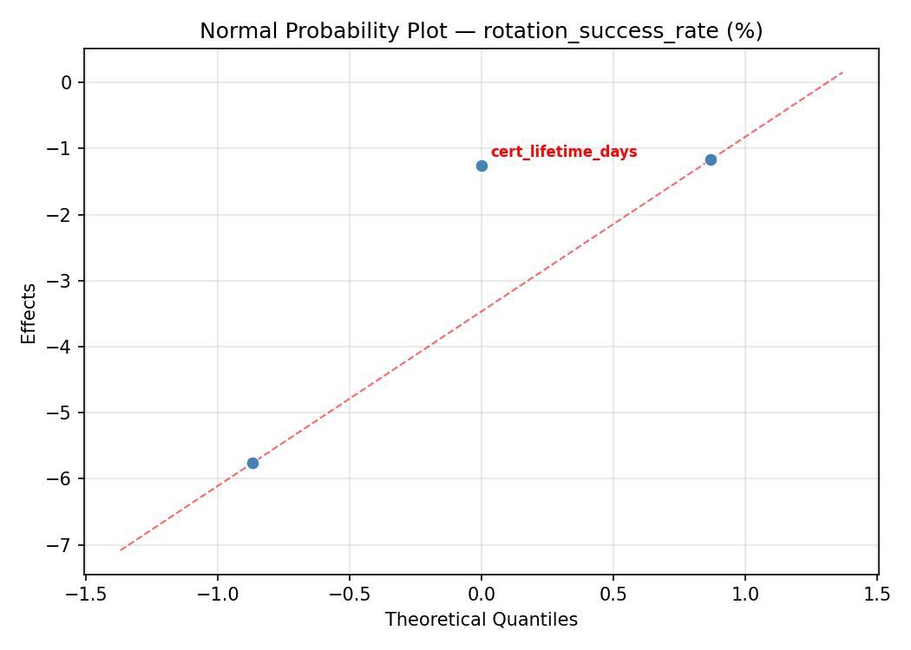
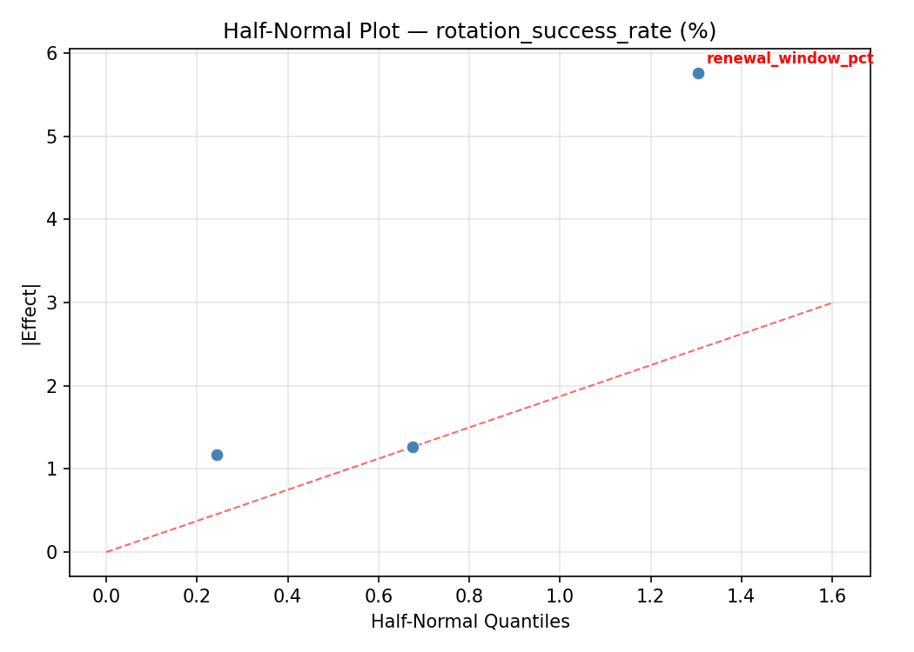
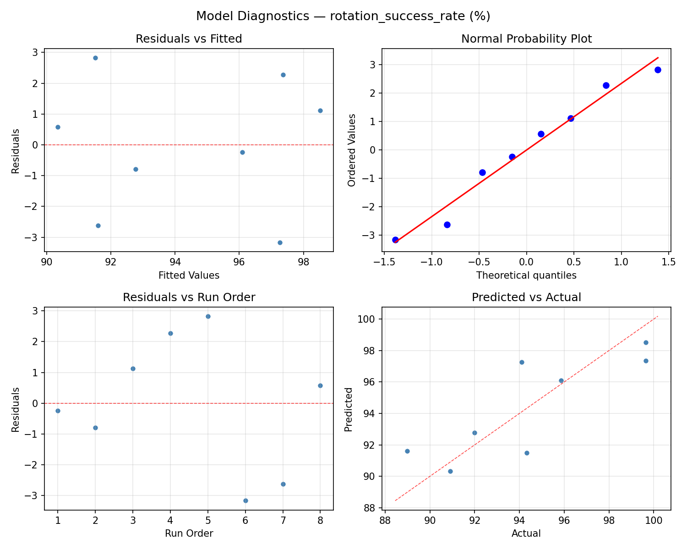
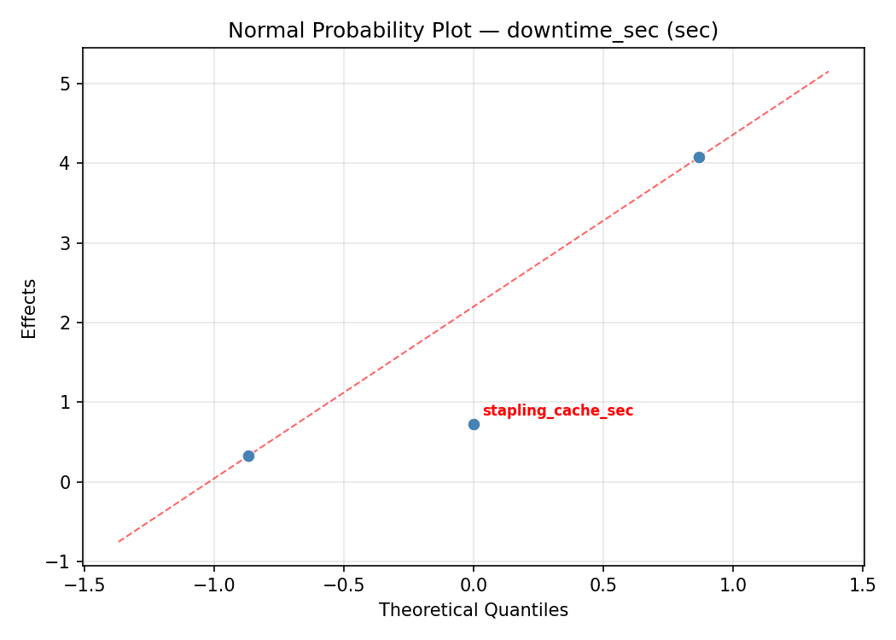
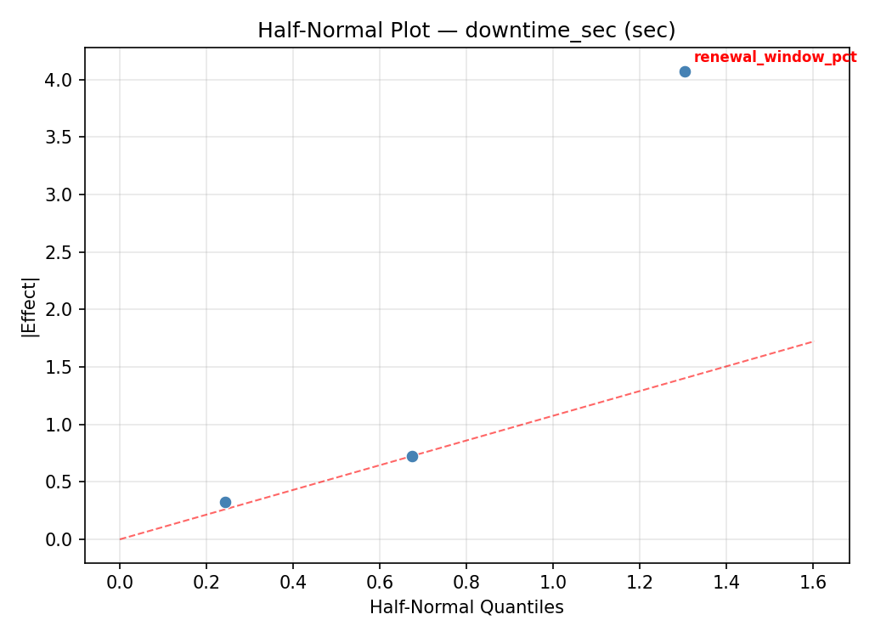
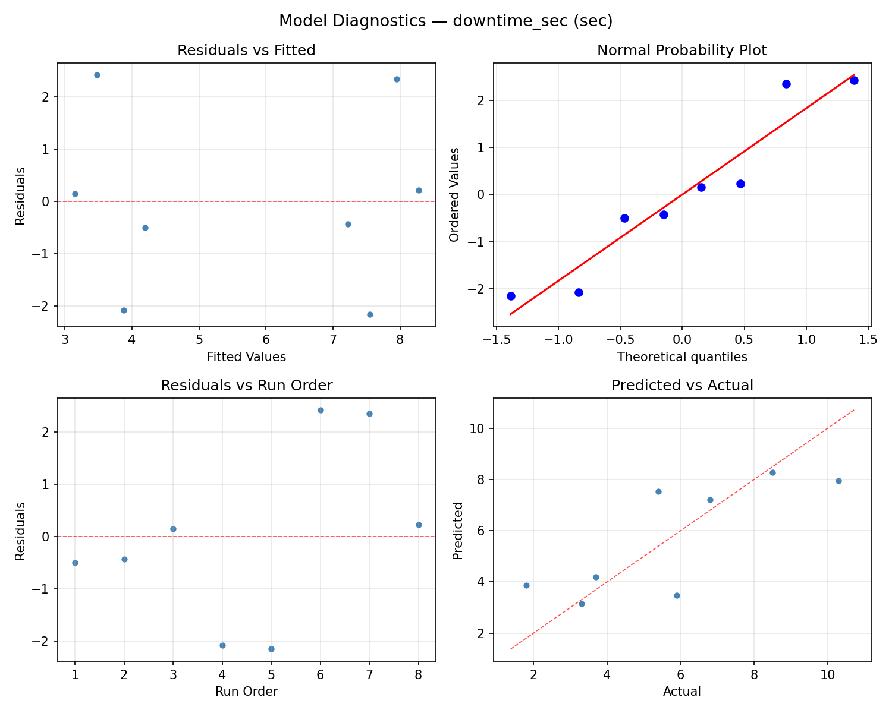

Summary
This experiment investigates certificate rotation strategy. Full factorial of cert lifetime, renewal window, and stapling cache for rotation success and downtime.
The design varies 3 factors: cert lifetime days (days), ranging from 30 to 90, renewal window pct (%), ranging from 10 to 30, and stapling cache sec (sec), ranging from 300 to 3600. The goal is to optimize 2 responses: rotation success rate (%) (maximize) and downtime sec (sec) (minimize). Fixed conditions held constant across all runs include ca = letsencrypt, key type = ecdsa_p256.
A full factorial design was used to explore all 8 possible combinations of the 3 factors at two levels. This guarantees that every main effect and interaction can be estimated independently, at the cost of a larger experiment (8 runs).
Key Findings
For rotation success rate, the most influential factors were renewal window pct (63.0%), cert lifetime days (22.9%), stapling cache sec (14.1%). The best observed value was 99.65 (at cert lifetime days = 90, renewal window pct = 10, stapling cache sec = 3600).
For downtime sec, the most influential factors were renewal window pct (83.1%), stapling cache sec (13.3%), cert lifetime days (3.6%). The best observed value was 1.8 (at cert lifetime days = 90, renewal window pct = 30, stapling cache sec = 3600).
Recommended Next Steps
- Consider whether any fixed factors should be varied in a future study.
Experimental Setup
Factors
| Factor | Low | High | Unit |
|---|
cert_lifetime_days | 30 | 90 | days |
renewal_window_pct | 10 | 30 | % |
stapling_cache_sec | 300 | 3600 | sec |
Fixed: ca = letsencrypt, key_type = ecdsa_p256
Responses
| Response | Direction | Unit |
|---|
rotation_success_rate | ↑ maximize | % |
downtime_sec | ↓ minimize | sec |
Configuration
{
"metadata": {
"name": "Certificate Rotation Strategy",
"description": "Full factorial of cert lifetime, renewal window, and stapling cache for rotation success and downtime"
},
"factors": [
{
"name": "cert_lifetime_days",
"levels": [
"30",
"90"
],
"type": "continuous",
"unit": "days"
},
{
"name": "renewal_window_pct",
"levels": [
"10",
"30"
],
"type": "continuous",
"unit": "%"
},
{
"name": "stapling_cache_sec",
"levels": [
"300",
"3600"
],
"type": "continuous",
"unit": "sec"
}
],
"fixed_factors": {
"ca": "letsencrypt",
"key_type": "ecdsa_p256"
},
"responses": [
{
"name": "rotation_success_rate",
"optimize": "maximize",
"unit": "%"
},
{
"name": "downtime_sec",
"optimize": "minimize",
"unit": "sec"
}
],
"settings": {
"operation": "full_factorial",
"test_script": "use_cases/62_certificate_rotation/sim.sh"
}
}
Experimental Matrix
The Full Factorial Design produces 8 runs. Each row is one experiment with specific factor settings.
| Run | cert_lifetime_days | renewal_window_pct | stapling_cache_sec |
|---|
| 1 | 30 | 30 | 3600 |
| 2 | 90 | 10 | 300 |
| 3 | 90 | 30 | 300 |
| 4 | 90 | 30 | 3600 |
| 5 | 30 | 30 | 300 |
| 6 | 90 | 10 | 3600 |
| 7 | 30 | 10 | 300 |
| 8 | 30 | 10 | 3600 |
Step-by-Step Workflow
1
Preview the design
$ python doe.py info --config use_cases/62_certificate_rotation/config.json
2
Generate the runner script
$ python doe.py generate --config use_cases/62_certificate_rotation/config.json \
--output use_cases/62_certificate_rotation/results/run.sh --seed 42
3
Execute the experiments
$ bash use_cases/62_certificate_rotation/results/run.sh
4
Analyze results
$ python doe.py analyze --config use_cases/62_certificate_rotation/config.json
5
Get optimization recommendations
$ python doe.py optimize --config use_cases/62_certificate_rotation/config.json
6
Multi-objective optimization
With 2 competing responses, use --multi to find the best compromise via Derringer–Suich desirability.
$ python doe.py optimize --config use_cases/62_certificate_rotation/config.json --multi
7
Generate the HTML report
$ python doe.py report --config use_cases/62_certificate_rotation/config.json \
--output use_cases/62_certificate_rotation/results/report.html
Features Exercised
| Feature | Value |
|---|
| Design type | full_factorial |
| Factor types | continuous (all 3) |
| Arg style | double-dash |
| Responses | 2 (rotation_success_rate ↑, downtime_sec ↓) |
| Total runs | 8 |
Analysis Results
Generated from actual experiment runs using the DOE Helper Tool.
Response: rotation_success_rate
Top factors: renewal_window_pct (63.0%), cert_lifetime_days (22.9%), stapling_cache_sec (14.1%).
ANOVA
| Source | DF | SS | MS | F | p-value |
|---|
| Source | DF | SS | MS | F | p-value |
| cert_lifetime_days | 1 | 0.5995 | 0.5995 | 0.749 | 0.5458 |
| renewal_window_pct | 1 | 4.5451 | 4.5451 | 5.681 | 0.2529 |
| stapling_cache_sec | 1 | 0.2278 | 0.2278 | 0.285 | 0.6880 |
| cert_lifetime_days*renewal_window_pct | 1 | 1.0585 | 1.0585 | 1.323 | 0.4556 |
| cert_lifetime_days*stapling_cache_sec | 1 | 66.4128 | 66.4128 | 83.004 | 0.0696 |
| renewal_window_pct*stapling_cache_sec | 1 | 31.0078 | 31.0078 | 38.754 | 0.1014 |
| Error | 1 | 0.8001 | 0.8001 | | |
| Total | 7 | 104.6517 | 14.9502 | | |
Pareto Chart

Main Effects Plot

Normal Probability Plot of Effects

Half-Normal Plot of Effects

Model Diagnostics

Response: downtime_sec
Top factors: renewal_window_pct (83.1%), stapling_cache_sec (13.3%), cert_lifetime_days (3.6%).
ANOVA
| Source | DF | SS | MS | F | p-value |
|---|
| Source | DF | SS | MS | F | p-value |
| cert_lifetime_days | 1 | 0.0112 | 0.0112 | 0.360 | 0.6560 |
| renewal_window_pct | 1 | 5.9512 | 5.9512 | 190.440 | 0.0461 |
| stapling_cache_sec | 1 | 0.1513 | 0.1513 | 4.840 | 0.2716 |
| cert_lifetime_days*renewal_window_pct | 1 | 0.5513 | 0.5513 | 17.640 | 0.1488 |
| cert_lifetime_days*stapling_cache_sec | 1 | 33.2113 | 33.2113 | 1062.760 | 0.0195 |
| renewal_window_pct*stapling_cache_sec | 1 | 15.4013 | 15.4013 | 492.840 | 0.0287 |
| Error | 1 | 0.0312 | 0.0312 | | |
| Total | 7 | 55.3088 | 7.9013 | | |
Pareto Chart

Main Effects Plot

Normal Probability Plot of Effects

Half-Normal Plot of Effects

Model Diagnostics

Response Surface Plots
3D surfaces fitted with quadratic RSM. Red dots are observed data points.
downtime sec cert lifetime days vs renewal window pct

downtime sec cert lifetime days vs stapling cache sec

downtime sec renewal window pct vs stapling cache sec

rotation success rate cert lifetime days vs renewal window pct

rotation success rate cert lifetime days vs stapling cache sec

rotation success rate renewal window pct vs stapling cache sec

Multi-Objective Optimization
When responses compete, Derringer–Suich desirability finds the best compromise.
Each response is scaled to a 0–1 desirability, then combined via a weighted geometric mean.
Overall Desirability
D = 0.9540
Per-Response Desirability
| Response | Weight | Desirability | Predicted | Dir |
|---|
rotation_success_rate |
1.5 |
|
99.64 0.9537 99.64 % |
↑ |
downtime_sec |
1.0 |
|
1.80 0.9545 1.80 sec |
↓ |
Recommended Settings
| Factor | Value |
|---|
cert_lifetime_days | 30 days |
renewal_window_pct | 10 % |
stapling_cache_sec | 3600 sec |
Source: from observed run #4
Trade-off Summary
Sacrifice = how much worse than single-objective best.
| Response | Predicted | Best Observed | Sacrifice |
|---|
downtime_sec | 1.80 | 1.80 | +0.00 |
Top 3 Runs by Desirability
| Run | D | Factor Settings |
|---|
| #3 | 0.8868 | cert_lifetime_days=90, renewal_window_pct=30, stapling_cache_sec=300 |
| #1 | 0.6770 | cert_lifetime_days=90, renewal_window_pct=30, stapling_cache_sec=3600 |
Model Quality
| Response | R² | Type |
|---|
downtime_sec | 0.2470 | linear |
Full Multi-Objective Output
============================================================
MULTI-OBJECTIVE OPTIMIZATION
Method: Derringer-Suich Desirability Function
============================================================
Overall desirability: D = 0.9540
Response Weight Desirability Predicted Direction
---------------------------------------------------------------------
rotation_success_rate 1.5 0.9537 99.64 % ↑
downtime_sec 1.0 0.9545 1.80 sec ↓
Recommended settings:
cert_lifetime_days = 30 days
renewal_window_pct = 10 %
stapling_cache_sec = 3600 sec
(from observed run #4)
Trade-off summary:
rotation_success_rate: 99.64 (best observed: 99.65, sacrifice: +0.01)
downtime_sec: 1.80 (best observed: 1.80, sacrifice: +0.00)
Model quality:
rotation_success_rate: R² = 0.1609 (linear)
downtime_sec: R² = 0.2470 (linear)
Top 3 observed runs by overall desirability:
1. Run #4 (D=0.9540): cert_lifetime_days=30, renewal_window_pct=10, stapling_cache_sec=3600
2. Run #3 (D=0.8868): cert_lifetime_days=90, renewal_window_pct=30, stapling_cache_sec=300
3. Run #1 (D=0.6770): cert_lifetime_days=90, renewal_window_pct=30, stapling_cache_sec=3600
Full Analysis Output
=== Main Effects: rotation_success_rate ===
Factor Effect Std Error % Contribution
--------------------------------------------------------------
renewal_window_pct 1.5075 1.3670 63.0%
cert_lifetime_days 0.5475 1.3670 22.9%
stapling_cache_sec 0.3375 1.3670 14.1%
=== ANOVA Table: rotation_success_rate ===
Source DF SS MS F p-value
-----------------------------------------------------------------------------
cert_lifetime_days 1 0.5995 0.5995 0.749 0.5458
renewal_window_pct 1 4.5451 4.5451 5.681 0.2529
stapling_cache_sec 1 0.2278 0.2278 0.285 0.6880
cert_lifetime_days*renewal_window_pct 1 1.0585 1.0585 1.323 0.4556
cert_lifetime_days*stapling_cache_sec 1 66.4128 66.4128 83.004 0.0696
renewal_window_pct*stapling_cache_sec 1 31.0078 31.0078 38.754 0.1014
Error 1 0.8001 0.8001
Total 7 104.6517 14.9502
=== Interaction Effects: rotation_success_rate ===
Factor A Factor B Interaction % Contribution
------------------------------------------------------------------------
cert_lifetime_days stapling_cache_sec 5.7625 55.3%
renewal_window_pct stapling_cache_sec -3.9375 37.8%
cert_lifetime_days renewal_window_pct -0.7275 7.0%
=== Summary Statistics: rotation_success_rate ===
cert_lifetime_days:
Level N Mean Std Min Max
------------------------------------------------------------
30 4 94.1575 3.8880 90.9100 99.6400
90 4 94.7050 4.4235 88.9800 99.6500
renewal_window_pct:
Level N Mean Std Min Max
------------------------------------------------------------
10 4 93.6775 4.5018 88.9800 99.6500
30 4 95.1850 3.6198 90.9100 99.6400
stapling_cache_sec:
Level N Mean Std Min Max
------------------------------------------------------------
300 4 94.2625 4.3533 88.9800 99.6400
3600 4 94.6000 3.9821 90.9100 99.6500
=== Main Effects: downtime_sec ===
Factor Effect Std Error % Contribution
--------------------------------------------------------------
renewal_window_pct -1.7250 0.9938 83.1%
stapling_cache_sec -0.2750 0.9938 13.3%
cert_lifetime_days -0.0750 0.9938 3.6%
=== ANOVA Table: downtime_sec ===
Source DF SS MS F p-value
-----------------------------------------------------------------------------
cert_lifetime_days 1 0.0112 0.0112 0.360 0.6560
renewal_window_pct 1 5.9512 5.9512 190.440 0.0461
stapling_cache_sec 1 0.1513 0.1513 4.840 0.2716
cert_lifetime_days*renewal_window_pct 1 0.5513 0.5513 17.640 0.1488
cert_lifetime_days*stapling_cache_sec 1 33.2113 33.2113 1062.760 0.0195
renewal_window_pct*stapling_cache_sec 1 15.4013 15.4013 492.840 0.0287
Error 1 0.0312 0.0312
Total 7 55.3088 7.9013
=== Interaction Effects: downtime_sec ===
Factor A Factor B Interaction % Contribution
------------------------------------------------------------------------
cert_lifetime_days stapling_cache_sec -4.0750 55.3%
renewal_window_pct stapling_cache_sec 2.7750 37.6%
cert_lifetime_days renewal_window_pct -0.5250 7.1%
=== Summary Statistics: downtime_sec ===
cert_lifetime_days:
Level N Mean Std Min Max
------------------------------------------------------------
30 4 5.7500 2.8455 1.8000 8.5000
90 4 5.6750 3.2149 3.3000 10.3000
renewal_window_pct:
Level N Mean Std Min Max
------------------------------------------------------------
10 4 6.5750 2.8930 3.3000 10.3000
30 4 4.8500 2.8431 1.8000 8.5000
stapling_cache_sec:
Level N Mean Std Min Max
------------------------------------------------------------
300 4 5.8500 3.4838 1.8000 10.3000
3600 4 5.5750 2.4998 3.3000 8.5000
Optimization Recommendations
=== Optimization: rotation_success_rate ===
Direction: maximize
Best observed run: #3
cert_lifetime_days = 90
renewal_window_pct = 10
stapling_cache_sec = 3600
Value: 99.65
RSM Model (linear, R² = 0.5245, Adj R² = 0.1678):
Coefficients:
intercept +94.4312
cert_lifetime_days +0.3638
renewal_window_pct +0.6962
stapling_cache_sec +2.4988
Predicted optimum (from linear model, at observed points):
cert_lifetime_days = 90
renewal_window_pct = 30
stapling_cache_sec = 3600
Predicted value: 97.9900
Surface optimum (via L-BFGS-B, linear model):
cert_lifetime_days = 90
renewal_window_pct = 30
stapling_cache_sec = 3600
Predicted value: 97.9900
Model quality: Moderate fit — use predictions directionally, not precisely.
Factor importance:
1. stapling_cache_sec (effect: 5.0, contribution: 70.2%)
2. renewal_window_pct (effect: 1.4, contribution: 19.6%)
3. cert_lifetime_days (effect: 0.7, contribution: 10.2%)
=== Optimization: downtime_sec ===
Direction: minimize
Best observed run: #4
cert_lifetime_days = 90
renewal_window_pct = 30
stapling_cache_sec = 3600
Value: 1.8
RSM Model (linear, R² = 0.4647, Adj R² = 0.0633):
Coefficients:
intercept +5.7125
cert_lifetime_days +0.2625
renewal_window_pct -0.7375
stapling_cache_sec -1.6125
Predicted optimum (from linear model, at observed points):
cert_lifetime_days = 90
renewal_window_pct = 10
stapling_cache_sec = 300
Predicted value: 8.3250
Surface optimum (via L-BFGS-B, linear model):
cert_lifetime_days = 30
renewal_window_pct = 30
stapling_cache_sec = 3600
Predicted value: 3.1000
Model quality: Weak fit — consider adding center points or using a different design.
Factor importance:
1. stapling_cache_sec (effect: -3.2, contribution: 61.7%)
2. renewal_window_pct (effect: -1.5, contribution: 28.2%)
3. cert_lifetime_days (effect: 0.5, contribution: 10.0%)